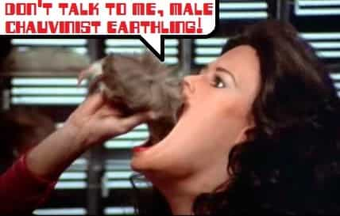
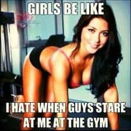

< < < Back
Women Want To Ban Men From Approaching Them While Still Insisting Men Make The First Move – Return Of Kings
How do relationships form? First, two people must talk to each other, but men are culturally expected to initiate. Therefore, stigmatizing conversation in the form of “street harassment” laws will end up removing attention from women, who value it far more than men. Feminism already has criminalized flirting at work, but now they want to ruin it everywhere.
The goal of second wave feminism was to destroy families. The resulting sexual revolution brought about a chaotic free-for-all, but lately that’s not enough for them. These twisted souls are trying to prevent men from starting conversations. In some places, they even have made it a crime. If they get their way everywhere, you could get arrested for conducting a perfectly normal human activity. You might even get busted for a non-flirtatious conversation if someone takes it the wrong way.
Women have absolute control over how far an interaction (or a relationship) goes; that’s understood. However, feminists now want to abrogate your freedom of speech.
The feminist spin

Never try to chat up Diana, especially if she’s hungry.
Like so much newly made up leftist terminology, “street harassment” is a framing tactic loaded with unstated assumptions. The foremost is equating normal conversation with harassment. Note well, they don’t differentiate polite approaches from being a sleazebag. Feminists conflate regular behavior with wrongdoing, try to frighten the public (sounds familiar?), and label it a pseudo-crime.
Furthermore, only straight guys are stigmatized. Women talking to men, or each other, isn’t “street harassment”. Neither do feminists condemn guy-on-guy approaches, because that would be “homophobia”. Another unstated assumption follows the “all men are oppressors” meme. Finally, standards are subjective. Since they get to decide what’s improper, you’re never safe from the self-appointed morality police.
This prudery is really about demonizing all types of male sexuality. If they’d just say “don’t be a sleazebag”, they’d have a point. However, their bias is showing more than some tease’s cleavage.
That video (you know which one)
The narrative kicked into high gear with the video “10 Hours of Walking in NYC as a Woman”, which ends with a request for donations. Our pals at HuffPo explained:
Rob Bliss of Rob Bliss Creative makes viral videos for a living and decided to use his craft to shine a light on street harassment, a pervasive issue affecting females around the world. Partnering with actress Shoshana B. Roberts and Hollaback, a nonprofit movement launched by activists to end street harassment, Bliss packaged his production as a PSA and offers viewers a different perspective on the problem. […]
His intent, he said, was to offer an “unbiased” look at what many women experience on a daily basis.
The actress received 108 incidents of alleged street harassment. That sounds pretty awful! Some items indeed transgressed good taste, things I’d certainly recommend not doing. I get it—being a sleazebag is bad.
However, some of it wasn’t objectively offensive, like “How are you doing?” or “God bless”. Perhaps some were just being friendly and no more. The video was edited from ten hours of walking in a form-fitting outfit through some sketchy parts of the Big Apple. The cherry-picking was pretty obvious, and the racial and class implications displeased many leftist commentators. Clashes of narratives can be quite entertaining! All that aside, one of the dudes actually had a pretty good point:
Somebody’s acknowledging you for being beautiful. You should say thank you more.
Much discussion and other videos followed. For instance, it was demonstrated that men get “harassed” too. Also, wearing Muslim garb stops all attention. The best responses were the Austin hipster, the kosher version (oy veh!). and especially the Princess Leia video.
The feminists are wrong

Surely that outfit was chosen completely at random, right???
Although the feminists have been trying to forbid even polite approaches, as usual they’re out of touch with what normal women want and need. We’ve heard quite enough from the blue-haired harpies. Now let’s come back to reality and examine what normal women think.
Do women want attention? Of course they do! If they wanted zero attention, they’d all wear burqas. Instead, dressing sharp is an art form. That’s why the cosmetics industry exists. Some of them get breast implants. When they show cleavage, it’s for a reason. All this is to maximize their erotic capital, far beyond what men do. Now take a wild guess why. If it were forbidden for us to give women attention, not only would it wreck their social lives, that would disempower them greatly.
Anyone who disbelieves that men are socially expected to approach needs look no further than The Rules, one of the most popular dating guides for women. Right at the beginning is the chapter “Don’t Talk to a Man First (and Don’t Ask Him to Dance)” They make it very clear that it’s the man’s job to open the conversation. Further, although men and women interact a lot in work contexts, it’s still on us guys to escalate.
The introduction indicates that the book is traditional advice passed down through generations; in that case, its millions of readers certainly aren’t the only ones thinking that way. Obviously its authors have a much better position to speak for women’s cultural opinion than the feminist fruitcakes.
The dating coach Tony D wrote an eye-opening piece about how feminism has wrecked the social environment in Vancouver. Men are shamed if they approach. However, many guys complied and now women ask “where did all the good men go?” He heavily cites female perspectives from mainstream news sources; for one telling example:
I mean, how many months of interactions do we have to have before you balls up and ask me out? Oh wait…you won’t.
The harpies have ruined it for everyone. Tony summarizes:
Women complain that they aren’t being approached, but then they complain when we approach you. What Do You Want? You want the guy you’re attracted to to approach you. Unfortunately, we don’t know if you’ll find us attractive, until we approach you.
We’re damned if we do, damned if we don’t. This is what happens when feminists are allowed to dictate the rules of social interactions.
Don’t listen to feminists

Triggered much?
Take a wild guess what will happen if you obey the feminists. That’s right—if you won’t open any conversations, then you won’t get results, but all the guys who disobey will be light years ahead of you. What makes them think they can dictate to us, anyway?
Don’t let these crabby tranquilizer addicts ruin our social environment worse than they already have. If they get their way with forbidding men from opening conversations, they’ll move the goalposts like they always do. Expect them to set their sights on the “male gaze” and try to forbid you from noticing anyone. They’re already calling it “eye rape”. So women can express their sexuality to great extremes, but appreciating it is conflated with a felony, and disapproving of it is “slut shaming”. Meanwhile, it’s reprehensible for men to express their sexuality. Who the hell do these feminists think they are?
The final word is that being a sleazebag is obviously bad, but there’s nothing wrong with starting a polite conversation. Anyone who can’t handle that without having a meltdown is terminally immature and unworthy of your companionship. Their neuroses are not your problem.
If you liked this, then don’t miss The Adventures of MP0werdW0myn and OmegaMan: Mission 1 – Operation Cockblock
Read More: Men Who Cold Approach Women Should Be Proud Of Themselves